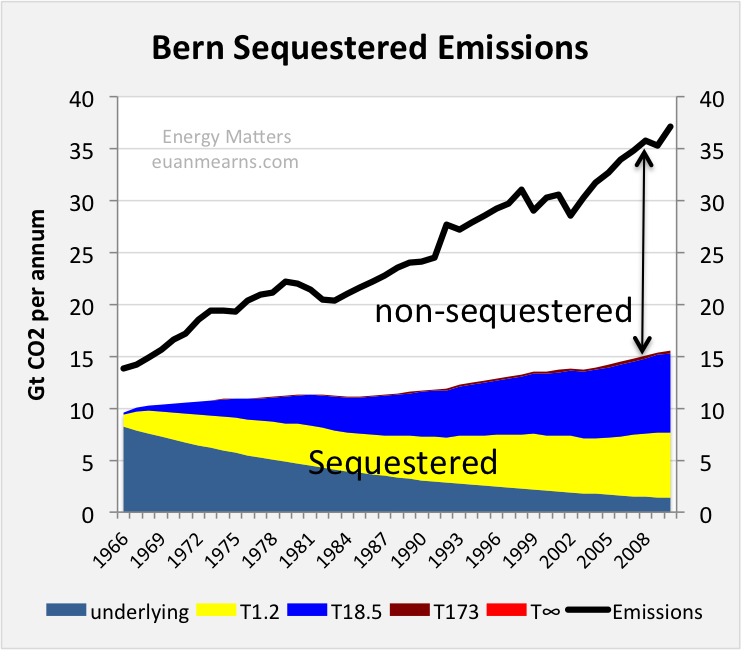
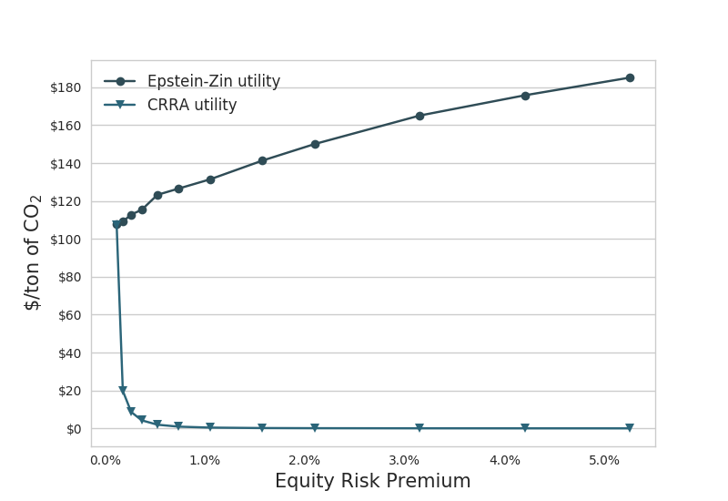

3 Bern Simple Climate Model (BernSCM)
Bern SCM Github README.md
The Bern Simple Climate Model (BernSCM) is a free open source reimplementation of a reduced form carbon cycle-climate model which has been used widely in previous scientific work and IPCC assessments. BernSCM represents the carbon cycle and climate system with a small set of equations for the heat and carbon budget, the parametrization of major nonlinearities, and the substitution of complex component systems with impulse response functions (IRF). The IRF approach allows cost-efficient yet accurate substitution of detailed parent models of climate system components with near linear behaviour. Illustrative simulations of scenarios from previous multi-model studies show that BernSCM is broadly representative of the range of the climate-carbon cycle response simulated by more complex and detailed models. Model code (in Fortran) was written from scratch with transparency and extensibility in mind, and is provided as open source. BernSCM makes scientifically sound carbon cycle-climate modeling available for many applications. Supporting up to decadal timesteps with high accuracy, it is suitable for studies with high computational load, and for coupling with, e.g., Integrated Assessment Models (IAM). Further applications include climate risk assessment in a business, public, or educational context, and the estimation of CO2 and climate benefits of emission mitigation options.
See the file BernSCM_manual(.pdf) for instructions on the use of the program.
Strassmann 2017 The BernSCM Bern SCM (pdf) Bern SCM Github Code
Parameters for tuning Bern
Critics of Bern Model
Y’know, it’s hard to figure out what the Bern model says about anything. This is because, as far as I can see, the Bern model proposes an impossibility. It says that the CO2 in the air is somehow partitioned, and that the different partitions are sequestered at different rates.
For example, in the IPCC Second Assessment Report (SAR), the atmospheric CO2 was divided into six partitions, containing respectively 14%, 13%, 19%, 25%, 21%, and 8% of the atmospheric CO2.
Each of these partitions is said to decay at different rates given by a characteristic time constant “tau” in years. (See Appendix for definitions). The first partition is said to be sequestered immediately. For the SAR, the “tau” time constant values for the five other partitions were taken to be 371.6 years, 55.7 years, 17.01 years, 4.16 years, and 1.33 years respectively.
Now let me stop here to discuss, not the numbers, but the underlying concept. The part of the Bern model that I’ve never understood is, what is the physical mechanism that is partitioning the CO2 so that some of it is sequestered quickly, and some is sequestered slowly?
I don’t get how that is supposed to work. The reference given above says:
CO2 concentration approximation
The CO2 concentration is approximated by a sum of exponentially decaying functions, one for each fraction of the additional concentrations, which should reflect the time scales of different sinks.
So theoretically, the different time constants (ranging from 371.6 years down to 1.33 years) are supposed to represent the different sinks. Here’s a graphic showing those sinks, along with approximations of the storage in each of the sinks as well as the fluxes in and out of the sinks:
(Carbon Cycle Picture)
Now, I understand that some of those sinks will operate quite quickly, and some will operate much more slowly.
But the Bern model reminds me of the old joke about the thermos bottle (Dewar flask), that poses this question:
The thermos bottle keeps cold things cold, and hot things hot … but how does it know the difference?
So my question is, how do the sinks know the difference?
Why don’t the fast-acting sinks just soak up the excess CO2, leaving nothing for the long-term, slow-acting sinks? I mean, if some 13% of the CO2 excess is supposed to hang around in the atmosphere for 371.3 years … how do the fast-acting sinks know to not just absorb it before the slow sinks get to it?
Anyhow, that’s my problem with the Bern model—I can’t figure out how it is supposed to work physically.
Finally, note that there is no experimental evidence that will allow us to distinguish between plain old exponential decay (which is what I would expect) and the complexities of the Bern model. We simply don’t have enough years of accurate data to distinguish between the two.
Nor do we have any kind of evidence to distinguish between the various sets of parameters used in the Bern Model. As I mentioned above, in the IPCC SAR they used five time constants ranging from 1.33 years to 371.6 years (gotta love the accuracy, to six-tenths of a year).
But in the IPCC Third Assessment Report (TAR), they used only three constants, and those ranged from 2.57 years to 171 years.
However, there is nothing that I know of that allows us to establish any of those numbers. Once again, it seems to me that the authors are just picking parameters.
So … does anyone understand how 13% of the atmospheric CO2 is supposed to hang around for 371.6 years without being sequestered by the faster sinks?
All ideas welcome, I have no answers at all for this one. I’ll return to the observational evidence regarding the question of whether the global CO2 sinks are “rapidly diminishing,” and how I calculate the e-folding time of CO2 in a future post.
Best to all,
APPENDIX: Many people confuse two ideas, the residence time of CO2, and the “e-folding time” of a pulse of CO2 emitted to the atmosphere.
The residence time is how long a typical CO2 molecule stays in the atmosphere. We can get an approximate answer from Figure 2. If the atmosphere contains 750 gigatonnes of carbon (GtC), and about 220 GtC are added each year (and removed each year), then the average residence time of a molecule of carbon is something on the order of four years. Of course those numbers are only approximations, but that’s the order of magnitude.
The “e-folding time” of a pulse, on the other hand, which they call “tau” or the time constant, is how long it would take for the atmospheric CO2 levels to drop to 1/e (37%) of the atmospheric CO2 level after the addition of a pulse of CO2. It’s like the “half-life,” the time it takes for something radioactive to decay to half its original value. The e-folding time is what the Bern Model is supposed to calculate. The IPCC, using the Bern Model, says that the e-folding time ranges from 50 to 200 years.
On the other hand, assuming normal exponential decay, I calculate the e-folding time to be about 35 years or so based on the evolution of the atmospheric concentration given the known rates of emission of CO2. Again, this is perforce an approximation because few of the numbers involved in the calculation are known to high accuracy. However, my calculations are generally confirmed by those of Mark Jacobson as published here in the Journal of Geophysical Research.
CO2 Lifetime
The overall lifetime of CO 2 is updated to range from 30 to 95 years
Any emission reduction of fossil-fuel particulate BC [Black Carbon] plus associated OM [Organic Matter] may slow global warming more than may any emission reduction of CO 2 or CH 4 for a specific period,
Jacobsen Abstract
This document describes two updates and a correction that affect two figures (Figures 1 and 14) in ‘‘Control of fossil-fuel particulate black carbon and organic matter, possibly the most effective method of slowing global warming’’ by Mark Z. Jacobson (Journal of Geophysical Research, 107(D19), 4410, doi:10.1029/2001JD001376, 2002). The modifications have no effect on the numerical simulations in the paper, only on the postsimulation analysis. The changes include the following: (1) The overall lifetime of CO 2 is updated to range from 30 to 95 years instead of 50 to 200 years, (2) the assumption that the anthropogenic emission rate of CO 2 is in equilibrium with its atmospheric mixing ratio is corrected, and (3) data for high-mileage vehicles available in the U.S. are used to update the range of mileage differences (15–30% better for diesel) in comparison with one difference previously (30% better mileage for diesel). The modifications do not change the main conclusions in J2002, namely, (1) ‘‘any emission reduction of fossil-fuel particulate BC plus associated OM may slow global warming more than may any emission reduction of CO 2 or CH 4 for a specific period,’’ and (2) diesel cars emitting continuously under the most recent U.S. and E.U. particulate standards (0.08 g/mi; 0.05 g/km) may warm climate per distance driven over the next 100+ years more than equivalent gasoline cars. Toughening vehicle particulate emission standards by a factor of 8 (0.01 g/mi; 0.006 g/km) does not change this conclusion, although it shortens the period over which diesel cars warm to 13–54 years,’’ except as follows: for conclusion 1, the period in Figure 1 of J2002 during which eliminating all fossil-fuel black carbon plus organic matter (f.f. BC + OM) has an advantage over all anthropogenic CO 2 decreases from 25–100 years to about 11–13 years and for conclusion 2 the period in Figure 14 of J2002 during which gasoline vehicles may have an advantage broadens from 13 to 54 years to 10 to >100 years. On the basis of the revised analysis, the ratio of the 100-year climate response per unit mass emission of f.f. BC + OM relative to that of CO 2 -C is estimated to be about 90–190.
What’s Up with the Bern Model
Mearns
In modelling the growth of CO2 in the atmosphere from emissions data it is standard practice to model what remains in the atmosphere since after all it is the residual CO2 that is of concern in climate studies. In this post I turn that approach on its head and look at what is sequestered. This gives a very different picture showing that the Bern T1.2 and T18.5 time constants account for virtually all of the sequestration of CO2 from the atmosphere on human timescales (see chart below). The much longer T173 and T∞ processes are doing virtually nothing. Their principle action is to remove CO2 from the fast sinks, not from the atmosphere, in a two stage process that should not be modelled as a single stage. Given time, the slow sinks will eventually sequester 100% of human emissions and not 48% as the Bern model implies.

Figure: The chart shows the amount of annual emissions removed by the various components of the Bern model. Unsurprisingly the T∞ component with a decline rate of 0% removes zero emissions and the T173 slow sink is not much better. Arguably, these components should not be in the model at all. The fast T1.2 and T18.5 sinks are doing all the work. The model does not handle the pre-1965 emissions decline perfectly, shown as underlying, but these too will be removed by the fast sinks and should also be coloured yellow and blue. Note that year on year the amount of CO2 removed has risen as partial P of CO2 has gone up. The gap between the coloured slices and the black line is that portion of emissions that remained in the atmosphere.
The Bern Model for sequestration of CO2 from Earth’s atmosphere imagines the participation of a multitude of processes that are summarised into four time constants of 1.2, 18.5 and 173 years and one constant with infinity (Figure 1). I described it at length in this earlier post The Half Life of CO2 in Earth’s Atmosphere.
3.1 NorESM
Norwegian Earth System Model
About
A climate model solves mathematically formulated natural laws on a three-dimensional grid. The climate model divides the soil system into components (atmosphere, sea, sea ice, land with vegetation, etc.) that interact through transmission of energy, motion and moisture. When the climate model also includes advanced interactive atmosphere chemistry and biogeochemical cycles (such as the carbon cycle), it is called an earth system model.
The Norwegian Earth System Model NorESM has been developed since 2007 and has been an important tool for Norwegian climate researchers in the study of the past, present and future climate. NorESM has also contributed to climate simulation that has been used in research assessed in the IPCC’s fifth main report.
INES
The project Infrastructure for Norwegian Earth System Modeling (INES) will support the further development of NorESM and help Norwegian scientists also gain access to a cutting-edge earth system model in the years to come. Technical support will be provided for the use of a more refined grid, the ability to respond to climate change up to 10 years in advance, the inclusion of new processes at high latitudes and the ability of long-term projection of sea level. Climate simulations with NorESM are made on some of the most powerful supercomputers in Norway, and INES will help these exotic computers to be exploited in the best possible way and that the large data sets produced are efficiently stored and used. The project will ensure that researchers can efficiently use the model tool, analyze results and make the results available.
3.1.1 CCSM4
UCAR NCAR
The University Corporation for Atmospheric Research (UCAR) is a US nonprofit consortium of more than 100 colleges and universities providing research and training in the atmospheric and related sciences. UCAR manages the National Center for Atmospheric Research (NCAR) and provides additional services to strengthen and support research and education through its community programs. Its headquarters, in Boulder, Colorado, include NCAR’s Mesa Laboratory. (Wikipedia)
CCSM
The Community Climate System Model (CCSM) is a coupled climate model for simulating Earth’s climate system. CCSM consists of five geophysical models: atmosphere (atm), sea-ice (ice), land (lnd), ocean (ocn), and land-ice (glc), plus a coupler (cpl) that coordinates the models and passes information between them. Each model may have “active,” “data,” “dead,” or “stub” component version allowing for a variety of “plug and play” combinations.
During the course of a CCSM run, the model components integrate forward in time, periodically stopping to exchange information with the coupler. The coupler meanwhile receives fields from the component models, computes, maps, and merges this information, then sends the fields back to the component models. The coupler brokers this sequence of communication interchanges and manages the overall time progression of the coupled system. A CCSM component set is comprised of six components: one component from each model (atm, lnd, ocn, ice, and glc) plus the coupler. Model components are written primarily in Fortran 90.
CESM
The Community Earth System Model (CESM) is a fully-coupled, global climate model that provides state-of-the-art computer simulations of the Earth’s past, present, and future climate states.
CESM2 is the most current release and contains support for CMIP6 experiment configurations.
Simpler Models
As part of CESM2.0, several dynamical core and aquaplanet configurations have been made available.
3.1.2 NorESM Features
Despite the nationally coordinated effort, Norway has insufficient expertise and manpower to develop, test, verify and maintain a complete earth system model. For this reason, NorESM is based on the Community Climate System Model version 4, CCSM4, operated at the National Center for Atmospheric Research on behalf of the Community Climate System Model (CCSM)/Community Earth System Model (CESM) project of the University Corporation for Atmospheric Research.
NorESM is, however, more than a model “dialect” of CCSM4. Notably, NorESM differs from CCSM4 in the following aspects: NorESM utilises an isopycnic coordinate ocean general circulation model developed in Bergen during the last decade originating from the Miami Isopycnic Coordinate Ocean Model (MICOM). The atmospheric module is modified with chemistry–aerosol–cloud–radiation interaction schemes developed for the Oslo version of the Community Atmosphere Model (CAM4-Oslo). Finally, the HAMburg Ocean Carbon Cycle (HAMOCC) model developed at the Max Planck Institute for Meteorology, Hamburg, adapted to an isopycnic ocean model framework, constitutes the core of the biogeochemical ocean module in NorESM. In this way NorESM adds to the much desired climate model diversity, and thus to the hierarchy of models participating in phase 5 of the Climate Model Intercomparison Project (CMIP5). In this and in an accompanying paper (Iversen et al., 2013), NorESM without biogeochemical cycling is presented. The reader is referred to Assmann et al. (2010) and Tjiputra et al. (2013) for a description of the biogeochemical ocean component and carbon cycle version of NorESM, respectively.
There are several overarching objectives underlying the development of NorESM. Western Scandinavia and the surrounding seas are located in the midst of the largest surface temperature anomaly on earth governed by anomalously large oceanic and atmospheric heat transports. Small changes to these transports may result in large and abrupt changes in the local climate. To better understand the variability and stability of the climate system, detailed studies of the formation, propagation and decay of thermal and (oceanic) fresh water anomalies are required.
NorESM is, as mentioned above, largely based on CCSM4. The main differences are the isopycnic coordinate ocean module in NorESM and that CAM4-Oslo substitutes CAM4 as the atmosphere module. The sea ice and land models in NorESM are basically the same as in CCSM4 and the Com- munity Earth System Model version 1 (CESM1), except that deposited soot and mineral dust aerosols on snow and sea ice are based on the aerosol calculations in CAM4-Oslo.
3.1.2.1 NorESM Aerosol Interactions
The aerosol module is extended from earlier versions that have been published, and includes life-cycling of sea salt, mineral dust, particulate sulphate, black carbon, and primary and secondary organics. The impacts of most of the numer- ous changes since previous versions are thoroughly explored by sensitivity experiments. The most important changes are: modified prognostic sea salt emissions; updated treatment of precipitation scavenging and gravitational settling; inclu- sion of biogenic primary organics and methane sulphonic acid (MSA) from oceans; almost doubled production of land- based biogenic secondary organic aerosols (SOA); and in- creased ratio of organic matter to organic carbon (OM/OC) for biomass burning aerosols from 1.4 to 2.6. Compared with in situ measurements and remotely sensed data, the new treatments of sea salt and dust aerosols give smaller biases in near-surface mass concentrations and aerosol optical depth than in the earlier model version. The model biases for mass concentrations are approximately un- changed for sulphate and BC. The enhanced levels of mod- led OM yield improved overall statistics, even though OM is still underestimated in Europe and overestimated in North America. The global anthropogenic aerosol direct radiative forc- ing (DRF) at the top of the atmosphere has changed from a small positive value to −0.08 W m −2 in CAM4-Oslo. The sensitivity tests suggest that this change can be attributed to the new treatment of biomass burning aerosols and gravita- tional settling. Although it has not been a goal in this study, the new DRF estimate is closer both to the median model estimate from the AeroCom intercomparison and the best es- timate in IPCC AR4. Estimated DRF at the ground surface has increased by ca. 60 %, to −1.89 W m −2
The increased abundance of natural OM and the introduc- tion of a cloud droplet spectral dispersion formulation are the most important contributions to a considerably decreased es- timate of the indirect radiative forcing (IndRF). The IndRF is also found to be sensitive to assumptions about the coat- ing of insoluble aerosols by sulphate and OM. The IndRF of −1.2 W m −2 , which is closer to the IPCC AR4 estimates than the previous estimate of −1.9 W m −2 , has thus been obtained without imposing unrealistic artificial lower bounds on cloud droplet number concentrations.
Bentsen (2013) NorESM - Part 1 (pdf)
Iversen (2013) NorESM - Part 2 (pdf)
Assmann (2010) Biogeochemical Ocean Component - Isopycnic (pdf)
Tjiputra (2010) Carbon Cycle Component (pdf)
3.2 Convection
Zhang

Figure: For the first time mesoscale convective systems (MCSs) in both the tropics and midlatitudes and all seasons can be tracked over many years by a new algorithm jointly using satellite observed cloud-top temperature and surface precipitation features at hourly and 10-km resolution globally (top panel). Results show that MCSs account for over 50% of the annual rainfall across the tropics and many regions of the subtropics and midlatitudes (bottom panel).
Mesoscale convective systems (MCSs) are a key component in the Earth’s energy and hydrological cycles. They can grow to hundreds of kilometers in size, last for more than a day, and produce a majority of the annual rainfall in many regions of the world.
Past efforts to develop MCS databases have been limited to the tropics and used methodologies not well tested in the midlatitudes. Feng et al. [2021] developed a new methodology to track MCSs globally using high-resolution satellite observations of both cloud and precipitation. The new method significantly improves the detection of MCSs in the midlatitudes. This new storm tracking database is the first to cover both the tropics and midlatitudes for all seasons.
The study shows that MCSs account for over 50 per cent of the annual rainfall across the tropics and many regions of the subtropics and midlatitudes. Storms over land have more intense convection, while those over oceans produce heavier rainfall and last longer.
This global MCS database supports a broad range of research such as understanding the role of MCSs in global extreme rainfall and circulation, and evaluation of global weather and climate model simulations.
Convective storms of mesoscale dimension are a key component in the Earth’s energy and hydrological cycle. Mesoscale storms grow to hundreds of kilometers in size and can last for more than a day, and produce a majority of the annual rainfall in many regions of the world. Past studies of mesoscale storms have been limited to the tropics and used methodologies not well tested in the midlatitudes. Here, we develop a new methodology to track mesoscale storms globally using high-resolution satellite observations of both cloud and precipitation. The satellite-based storm tracking reproduces important storm statistics derived from ground-based radar observations. Our new method significantly improves the detection of mesoscale storms in the midlatitudes. This new storm tracking database is the first to cover both the tropics and midlatitudes for all seasons. Results show that mesoscale convective storms account for over 50% of annual rainfall across the tropics and many regions of the subtropics and midlatitudes. Storms over land have more intense convection, while those over ocean produce heavier rainfall and last longer. This global mesoscale storms tracking database supports a broad range of applications, such as understanding their role in global extreme rainfall and circulation and evaluation of global weather and climate model simulations.
3.3 Goal Index
In economic modelling choice of goal index (utility) function matters. Daniel 20181 presents this figure:

Fig. Optimal CO2-prices with increasing risk aversion for EZ vs CRRA utility specification. (From Daniel 2018)
As one of the co-authors explain: ‘We where not able to get the Social Cost of Carbon (SCC) under $120.’ That is for ‘reasonable risk aversion,’ using EZ-utilities. The ‘standard’ specification - with CRRA - utilities ends up with SCC of $20 or below.
\[V_1 = A [\tilde{C\_t}, \mu_t(V\_{t+1})]\]
Specification of the Goal Index function may seem a trivial technical issue - no so! There exists a broad professional litterature and profound discussions on this matter - which might de difficult to dis-entangle.
Let us begin with Frank Ramsey’s growth model from 1928, commonly known as the Ramsey-Cass-Koopmans model.
\(F(K,L)\) is an aggregate production function with factors \(K\) (Capital) and \(L\) (Labour).
3.4 Model Drift
Abstract Sausen
A method is proposed for removing the drift of coupled atmosphere-ocean models, which in the past has often hindered the application of coupled models in climate response and sensitivity experiments. The ocean-atmosphere flux fields exhibit inconsistencies when evaluated separately for the individual sub-systems in independent, uncoupled mode equilibrium climate computations. In order to balance these inconsistencies a constant ocean-atmosphere flux correction field is introduced in the boundary conditions coupling the two sub-systems together. The method ensures that the coupled model operates at the reference climate state for which the individual model subsystems were designed without affecting the dynamical response of the coupled system in climate variability experiments. The method is illustrated for a simple two component box model and an ocean general circulation model coupled to a two layer diagnostic atmospheric model.
Memo Barthel
The coupling of different climate sub-systems poses a number of technical problems. An obvious problem arising from the different time scales is the synchronization or matching of the numerical integration of subsys- tems characterized by widely differing time steps. A more subtle problem is
Model Drift When two general circulation models of the atmosphere and ocean are coupled together in a single model, it is generally found that the cou- pled system gradually drifts into a new climate equilibrium state which is far removed from the observed climate. The coupled model climate equilibrium may be so unrealistic (for example, with respect to sea ice extent, or the oceanic equa- torial current system) that climate response or sensitivity experiments relative to this state be- come meaningless. This occurs regularly even when the individual models have been carefully tested in detailed numerical experiments in the decoupled mode and have been shown to yield satisfactory simulations of the climate of the sepa- rate ocean or atmosphere sub-systems. The drift of the coupled model is clearly a sign that something is amiss with the models. Howev- er, we suggest that it is not necessary to wait with climate response and sensitivity experiments with coupled models unit all causes of model drift have been properly identified and removed. Model drift is, in fact, an extremely sensitive indi- cator of model imperfections. The fact that the equilibrium climate into which a coupled model drifts is unacceptably far removed from the real climate does not necessarily imply that the model dynamics are too unrealistic for the model to be applied for climate response and sensitivity ex- periments. One should therefore devise methods for separating the drift problem from the basically independent problem of determining the change of the simulated climate induced by a change in boundary conditions a n d / o r external forcing (cli- mate response), and from the question of the ef- fect of changes in the physical or numerical for- mulation of the model (model sensitivity).
Flux Correction The separation of the mean climate simulation from the climate response or sensitiv- ity problem can be achieved for coupled models rather simply by an alternative technique, the flux correction method. The errors that result in a drift of the coupled model are compensated in this method by con- stant correction terms in the flux expressions by which the separate sub-system models are cou- pled together. The correction terms have no in- fluence on the dynamics of the system in climate response or sensitivity experiments, but ensure that the “working point” of the model lies close to the climate state for which the individual models were originally tuned. The basic principle of the flux correction method is to couple the atmosphere and the ocean in such a manner that in the unperturbed case each sub- system simulates its own mean climate in the same manner as in the uncoupled mode, but re- sponds fully interactively to the other sub-system in climate response or sensitivity experiments.
Sausen (1988) Coupled Ocean-Atmosphere Model Drift Flux Correction (pdf)
3.5 Spatial Shock
3.5.1 Coastal Flooding
Desmet
Just moving to higher grounds
Nobel Prize winner William Nordhaus has called climate change “the ultimate challenge for economics.”
Economists increasingly have been trying to understand how rising tides and global temperatures will impact resource allocation around the globe, as well as the potential policy tools that can help curb damage to our natural world.
SMU professor Klaus Desmet says that a lot of those analyses are missing a critical factor: migration.
Desmet coauthored a paper in the American Economic JournalEvaluating the Economic Cost of Coastal Flooding (paywall): Macroeconomics that examines how economic output will be affected over the next 200 years as humans move away from coastal areas threatened by rising sea levels. Although losses in vulnerable Southeast Asian cities such as Bangkok and Shanghai will still be very significant, their research shows that overall GDP declines are substantially less than predicted by models that don’t account for spatial shifts in economic activity.
Climate change is to a large extent a spatial shock.
Migration as one of the key responses to climate change.
What we find in our model is that at a global level, flooding decreases real GDP by about 0.1 percent by the year 2200. If we were to completely ignore the dynamic spatial response of the economy, if we were to have everyone stay put in the face of rising seas, then the loss would actually increase to 4.5 percent. So, that difference between 0.1 and 4.5 percent underscores the first-order importance of taking into account moving, migration, and the spatial dynamic response of the economy to rising sea levels.
We develop a high resolution dynamic model of the world economy. This model splits up the world into 64,800 1° by 1° grid cells, which are linked to each other through trade and migration. We feed into this model high-quality projections of both global and local sea level rise over the next 200 years. . . . When we run our model forward, we can then assess what the economic effect will be of having these pieces of land lost for production.
We find large losses in coastal areas of south and east Asia, with countries such as Vietnam, Thailand, and Bangladesh losing up to 10 percent of real GDP in present discounted value terms over the next 200 years. Other areas that will also suffer disproportionately include coastal Northwest Europe, [and] some areas on the US East Coast and Gulf Coast. By contrast, the Pacific Coast of the Americas is much less affected and, in fact, most of the coastal areas of Africa are also a lot less affected.
See Links to references↩︎